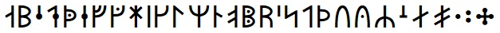

BabelStone Runic Dotted is a Unicode Runic font covering the Scandinavian Pointed Runic Alphabet, also known as dotted runes, as well as various other medieval runic letters, in total 37 runes.
BabelStone Runic Dotted (24 points)

The tables below render each character using BabelStone Runic Dotted, either using the font installed on your local machine or using WOFF fonts if the font is not installed on your local machine.
| Code Point | Character Name | Letter | Character |
|---|---|---|---|
| 16A0 | RUNIC LETTER FEHU FEOH FE F | F | ᚠ |
| 16A2 | RUNIC LETTER URUZ UR U | U | ᚢ |
| 16A4 | RUNIC LETTER Y | Y | ᚤ |
| 16A6 | RUNIC LETTER THURISAZ THURS THORN | Þ | ᚦ |
| 16A7 | RUNIC LETTER ETH | Ð | ᚧ |
| 16AE | RUNIC LETTER O | O | ᚮ |
| 16AF | RUNIC LETTER OE | Œ | ᚯ |
| 16B1 | RUNIC LETTER RAIDO RAD REID R | R | ᚱ |
| 16B4 | RUNIC LETTER KAUN K | K | ᚴ |
| 16B5 | RUNIC LETTER G | G | ᚵ |
| 16BC | RUNIC LETTER LONG-BRANCH-HAGALL H | H | ᚼ |
| 16BF | RUNIC LETTER SHORT-TWIG-NAUD N | N | ᚿ |
| 16C1 | RUNIC LETTER ISAZ IS ISS I | I | ᛁ |
| 16C2 | RUNIC LETTER E | E | ᛂ |
| 16C5 | RUNIC LETTER LONG-BRANCH-AR AE | Æ | ᛅ |
| 16C6 | RUNIC LETTER SHORT-TWIG-AR A | A | ᛆ |
| 16CB | RUNIC LETTER SIGEL LONG-BRANCH-SOL S | S | ᛋ |
| 16CC | RUNIC LETTER SHORT-TWIG-SOL S | S | ᛌ |
| 16CD | RUNIC LETTER C | C | ᛍ |
| 16CE | RUNIC LETTER Z | Z | ᛎ |
| 16D0 | RUNIC LETTER SHORT-TWIG-TYR T | T | ᛐ |
| 16D1 | RUNIC LETTER D | D | ᛑ |
| 16D2 | RUNIC LETTER BERKANAN BEORC BJARKAN B | B | ᛒ |
| 16D4 | RUNIC LETTER DOTTED-P | P | ᛔ |
| 16D8 | RUNIC LETTER LONG-BRANCH-MADR M | M | ᛘ |
| 16DA | RUNIC LETTER LAUKAZ LAGU LOGR L | L | ᛚ |
| 16E6 | RUNIC LETTER LONG-BRANCH-YR | Y | ᛦ |
| 16EB | RUNIC SINGLE PUNCTUATION | ᛫ |
|
| 16EC | RUNIC MULTIPLE PUNCTUATION | ᛬ |
|
| 16ED | RUNIC CROSS PUNCTUATION | ᛭ |
|
| 16EE | RUNIC ARLAUG SYMBOL | ᛮ |
|
| 16EF | RUNIC TVIMADUR SYMBOL | ᛯ |
|
| 16F0 | RUNIC BELGTHOR SYMBOL | ᛰ |
| Version | Date | Notes |
|---|---|---|
| 3.000 | 2018-02-11 | Initial release |
| 3.001 | 2018-02-15 | Plus 10 additional runes |
BabelStone Runic Dotted is licensed under the SIL Open Font License 1.1, which means you are free to use it for personal or commercial purposes, and to redistribute it by itself or as part of a free or commercial software package, just as long as you do not sell the font on its own. The license also allows you to modify the font in any way you like, as long as the modified font does not use "BabelStone" in its name. Please read the license for details.
A WOFF format web font version of BabelStone Runic Dotted is available here. You are free to download and host the web font on your own web site, but you may not dynamically use the woff font on www.babelstone.co.uk from your web site.
BabelStone Runic | BabelStone Runic Elder Futhark | BabelStone Younger Futhark Runes | BabelStone Runic Staveless | BabelStone Anglo-Saxon Runes | BabelStone Moon Runes